Sorry Dad Tattoo
Tatuagens autorais
Nova Iguaçu, RJ
Blackwork, Fineline, Realismo, Colorido e Cover Up. Seu próximo projeto começa aqui.
Onde estamos
Sorry Dad Tattoo, Nova Iguaçu

Tatuagens autorais
Nova Iguaçu, RJ
Blackwork, Fineline, Realismo, Colorido e Cover Up. Seu próximo projeto começa aqui.
Sorry Dad Tattoo, Nova Iguaçu